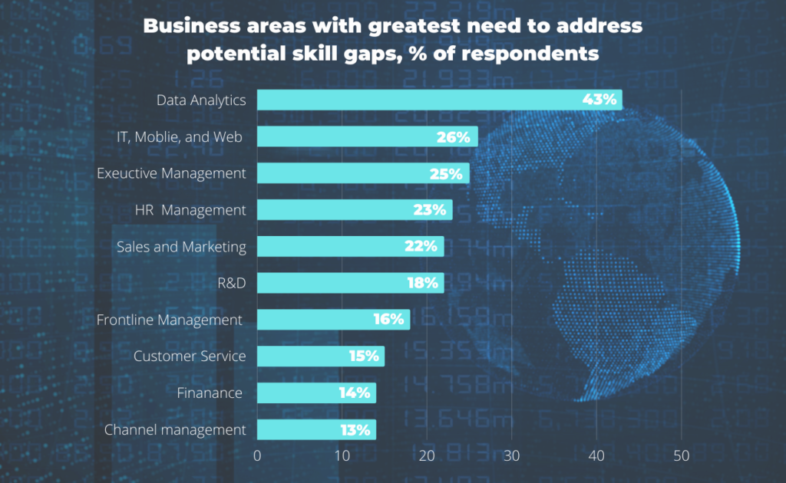

Companies are facing a shortage of software developers around the world. No matter what statistic or report you read, everyone seems to agree on one thing: the number of software developers needed to cover all of the industry’s needs is staggering and only increasing.
For example, IDC has forecast a global shortage of four million software developers by 2025, while the US Bureau of Labor Statistics shows that nearly 200,000 developer jobs will be needed each year until the end of the decade.
Furthermore, software systems are inherently complex, forcing developers to work with multiple technologies, languages, and libraries.
In this environment, managing the interdependencies can be very costly, even more so as systems grow in size and complexity (Figure 1.

Fig.1. Business areas with greatest need to address potential skil gaps (Source: Trientpont)
One of the immediate consequences of all the above, according to Gartner, is that the demand for qualified software developers has become challenging and will increase five times faster than the industry’s ability to supply it.
In face of this challenging context for transformational leaders, the implementation of a Low-code/No-code development strategy offers a way to alleviate the problem of the shortage of software developers and manage the growing complexity in the development of software systems.
In this article we will learn more about this relatively new Low-code/No-code approach and delve into the benefits and challenges of implementing it at the business level.
What Is a Low-code Strategy About?
A Low-code strategy is nothing more than articulating, in a systematized manner and aligned with the organization’s key objectives and strategies, the implementation and use of Low-code practices to service those users who can contribute to the development of solutions in their particular domains, without having specific software development skills.
The rationale for a Low-code strategy is therefore to provide the opportunity to create software with minimal need for manual coding and to increase non-programmer participation in developing solutions through software.
A Low-code/No-code development strategy promises to alleviate the problem of the shortage of software developers and manage the growing complexity in the development of software systems
A variant of Low-code, known as No-code development, aims to eliminate all coding when developing software solutions.
Low-code software development is accomplished on Low-code software development platforms, either cloud-based with a Platform-as-a-service (PaaS) model or on-premises. Using visual diagrams, declarative languages, and dynamic graphical user interfaces, the developers define user interfaces, business logic, and data services.
Low-code Tools
Low-code tools are nothing new, in fact they first appeared in the 1980s as Computer-aided software engineering (CASE) tools, which shared concepts with computer-aided design tools. The term “low-code” was coined in 2014 by Forrester Research in a report that analyzed the current positions of the main vendors in the market.
Originally, these tools were intended to offer layers of abstraction, in the form of libraries for handling timestamps or mathematical functions, so that developers would not have to worry about the finer details of a program. However, as the use of mainframes began to decline, their use became rarer. At the beginning of the 90s it had been shown that the greater interactivity offered by these tools made it viable to improve the productivity of developers through, for example, web-based tools.
Low-code software development is accomplished on Low-code software development platforms, either cloud-based with a Platform-as-a-service (PaaS) model or on-premises
Today Low-code/No-code platforms boost software development through graphical user interfaces and allow people with no or little programming knowledge to develop their own applications. These applications range from web and mobile apps to backend applications and user interfaces of varying degrees of complexity and in areas such as healthcare, education, transportation, entertainment, and government.
According to Gartner, the Low-code industry is growing strongly and predicts that more than 65% of all application development will be done through low-code development platforms by 2024, and that three-quarters of all large companies will use the least four Low-code development platforms by that year. Other market studies predict significant growth in the coming years to reach US$45.5 billion by 2025.
Among the most popular Low-code/No-code vendors are Mendix, OutSystems, and Microsoft PowerApps, followed by ServiceNow, Salesforce, and Appian (Fig.2)
Fig.2. 2023 Gartner® Magic Quadrant™ for Enterprise Low-Code Application Platforms (Source: Gartner)
Benefits
Among the main benefits provided by Low-code/No-code development platforms, two are often cited: the reduction of manual coding, and the possibility of faster deployment of applications with the help of visual tools and the ability to create multi-level workflows.
Basically, this allows users with few technical skills to develop their own software to solve specific needs. Low-code/No-code development platforms can also be used by expert developers in order to minimize (or eliminate) the number of lines of code written.
Many users of Low-code/No-code development platforms also point to ease of use, resource savings, and increased productivity as the most important benefits. These platforms would also generate important benefits when it comes to integrating data, especially when application development requires the integration of data from other sources.
Challenges
Despite the important benefits that Low-code/No-code platforms provide, there are studies that show that these platforms create new technical and social challenges. Among them, usability is perhaps the most notable challenge, considering that most users usually lack software programming knowledge.
Added to this are often concerns about data security, lack of trust in the delivered application/data, and the need for governance approaches.
Low-code/No-code development platforms can also be used by expert developers in order to minimize (or eliminate) the number of lines of code written
Other important challenges, similar to what happens with other advanced technologies, is the dependence on the platforms adopted (vendor lock-in) when deciding on the growth and evolution of applications, and the still limited functionalities offered by vendors.
Conclusion
Low-code/No-code software development is an emerging trend that aims to address some of the main causes of delay in application development in a business transformation context: the shortage of professional developers and the increasing complexity of software systems development.
To solve, or at least alleviate, these tensions, Low-code/No-code platforms allow non-programming and non-technical users to actively participate in the development process.
These users are typically experts in a particular domain and specific system functionalities, meaning they know and can define the requirements, and can participate in the phases of the software development life cycle: design, development, testing, implementation, and maintenance.
Low-code platforms enable rapid translation of business requirements to new application development, as well as the ability to make adjustments quickly, as there is no need for extensive manual coding. Furthermore, due to the reduction in time spent in the software development cycle, it is also possible to reduce development costs for the company.
Along with the benefits provided by Low-code/No-code strategies, there are, however, important challenges that only time will tell how they are solved by vendors.
Transformational leaders will need to be aware that users of Low-code/No-code platforms usually lack programming knowledge and, consequently, this is a limiting factor for adapting and applying Low-code/No-code strategies in any business transformation roadmap.
Photo by pch.vector Freepik